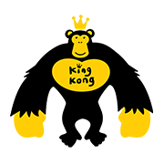

KingKong영어유치원
Project
아이들이 다니는 영어 유치원이기 때문에, 활동적인 느낌을 주기 위해 컬러풀한 요소를 사용하였습니다.
또한, 운영 방식에 대한 정확한 정보 전달을 목표로 삼았습니다. 그래서 화려한 디자인이지만 가독성을 높이고 세련되게 디자인하였습니다.
Style Guide
Concept
- 홍보 목적이므로 가독성을 해치지 않는 화려함
Keyword
- #활동적인
- #밝은
- #활기찬
Color
-
#FF6B1B
-
#FFEC83
-
#4D76C6
-
#F5F4EC
-
#000000
-
#808080
-
#B3B3B3
Typography
- Noto Sans KR - 한글 기본 서체
- tenor sans - 영어 기본 서체
Publishing
- PC : 1240px ~ / Tablet : 716px~ / Mobile : 716px 이하
- 미디어쿼리를 이용한 반응형 웹
- Swiper를 이용한 슬라이드 구현
- flex와 grid를 이용한 웹페이지 레이아웃 제작/제어
Problems & Solution
- 슬라이드를 구현이 되지않는다!
-
슬라이드에 여백이 너무 많이 생겨 제대로 슬라이드가 되지않았다.
swiper를 사용하여 클래스값을 같이 주고, 구조를 똑같이 만든후, css값도 동일하게 주었다. 그후 .swiper-wrapper의 width값을 100%를 주고 이미지 또한 100%로를 주니 구현이 되었다.
- 여백값을 어떻게 주어야 하는가.
-
여백을 어떻게 주어야 가독성이 좋은지에 대한 고민.
다른 레퍼런스 사이트를 참고하면서 여백에 대해 주의깊게 살펴보고, 동일한 디자인을 시도해 보면서 어디에 여백을 적절히 활용하면 가독성이 좋아질지에 대해 많은 고민을 해보았습니다.
최종적으로는 심플한 디자인이지만 정보 제공 측면에서는 가독성이 우수한 결과물을 만들어냈기 때문에 만족스럽습니다.
Review
제가 처음에는 자신감을 가지고 화려하고 멋진 디자인을 할 수 있을 것이라고 생각했습니다. 따라서 디자인 작업을 시작했으나, 반응형으로 만드는 것이 예상보다 쉽지 않았습니다. 모바일에 맞추면 태블릿에서, 태블릿에 맞추면 PC에서 구조가 계속해서 꼬이는 문제가 있었습니다.
하지만 계속해서 수정을 하여 반응형을 완성시켰고, 슬라이드 작업을 하려고 할 때 또 다른 어려움이 있었습니다. 스크립트를 배우기 전에 구조를 설계했던 것이 swiper 작업에 적합하지 않았습니다. 그래서 구조를 새롭게 수정한 후 실행했을 때, 이번에는 여백이 너무 많아서 제대로 된 슬라이드가 아니었습니다. 그래도 계속해서 고민하고 수정을 거쳐 구현에 성공했고, 이 부분에 많은 시간과 노력을 투자한 만큼 더욱 뿌듯했습니다.
편하다고 생각했던 작업이 어렵게 느껴지면서 더욱 자부심을 갖게 되었습니다. 또한 이 작업을 통해 더 열심히 공부해야겠다는 생각을 하게 되었습니다.